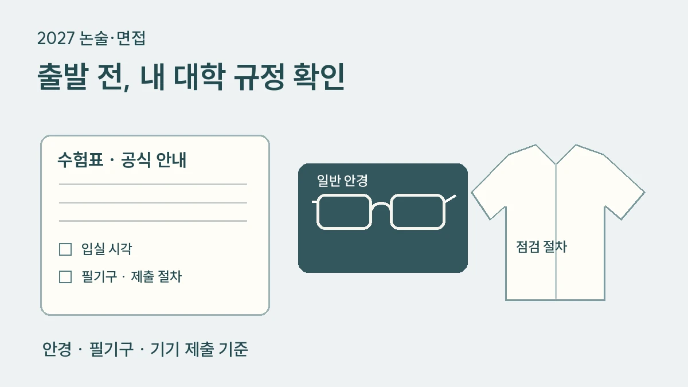

수능 끝난 논술·면접장, 일회용 가운과 열화상카메라까지 나온 이유
2027학년도 논술·면접 보안 강화 보도를 바탕으로 안경·필기구·전자기기 제출 기준을 구분합니다. 대교협의 최대 10년 입학 제한 추진안과 현재 적용 규정의 차이, 출발 전 체크리스트를 정리했습니다.

논술 답안과 면접 답변을 준비했더라도, 시험장에서 쓸 펜과 가져갈 기기의 규정은 별도로 확인해야 합니다. 이 글은 2027학년도 학부 수시 대학별 고사에 응시하는 수험생·학부모를 위한 출발 전 점검표입니다. 2026년 11월 20일 오전에 확인한 보도와 공식 자료를 구분해 읽고, 최종 준비물은 본인의 대학·전형·고사 공지에 맞춰 정리하세요.
1. 가운·앞치마·탐지 장비, 보도에서 확인한 변화
아시아경제는 2026년 11월 20일 대학들이 스마트안경과 소형 촬영·통신기기를 경계하며 보안 점검을 강화한다고 보도했습니다. 서울대의 일회용 면접 가운, 경희대의 불투명 앞치마와 안경 점검, 세종대의 탐지 장비 운영이 사례로 제시됐습니다. 모두 같은 장비를 쓴다는 뜻은 아닙니다.[1]
같은 기사에서 서울대는 특정 스마트기기의 사용뿐 아니라 소지 자체를 문제 삼는 것으로, 경희대는 해당 기기가 켜진 상태에서 적발되는 경우를 부정행위로 처리하는 것으로 설명됩니다. 성균관대의 대학 제공 필기구 외 사용 제한도 보도됐습니다. 이 문장들은 취재 보도 요약이며, 각 대학의 최신 수험생 안내문을 대신하지 않습니다.[1]
여기서 얻을 실용적인 교훈은 ‘일반 안경을 쓰면 안 된다’가 아닙니다. 안경 점검 대상, 전자기기의 반입·제출·보관 기준, 개인 필기구 허용 여부를 서로 다른 항목으로 읽어야 한다는 것입니다. 후드가 있다는 이유만으로 모든 대학에서 해당 옷을 금지한다고 확대해석하지 마세요. 아래 공식 확인란과 본인의 공지를 대조하는 순서가 먼저입니다.
2. 내 대학 공지에서는 네 가지를 따로 확인하기
성균관대는 공식 수정 안내 PDF 1~3쪽을 확인했습니다. 대학이 제공한 볼펜·샤프 겸용 필기구만 쓸 수 있고 개인 필기구는 사용할 수 없습니다. 개인 지우개는 관리위원 확인 후 사용 가능합니다. 전자기기는 전원을 끄거나 배터리를 분리해 지정 지퍼백으로 제출하며, 시험 도중에는 꺼져 있거나 사용하지 않아도 소지하면 부정행위로 간주합니다. 일반 안경은 확인 후 사용할 수 있지만 시험 전·중 벗어 보여 달라는 요청에 따라야 합니다. 시험 중 모자와 후드 착용도 제한합니다. 이는 성균관대 해당 논술 안내이며 다른 대학의 기준은 아닙니다.[3]
2026년 11월 22일 재확인 결과, 세종대의 ‘15시 공지 예정’ 안내는 실제 고사장·유의사항 조회 링크로 바뀌었고, 같은 공지 본문에 세부 준비물 지침도 공개됐습니다. 세종대는 개인이 가져온 검정색(흑색) 필기도구로 답안을 작성하도록 하므로 성균관대의 지급 필기구 규정을 그대로 적용하면 안 됩니다. 고사 중 전자·통신기기와 스마트기기는 활용 여부나 기능과 무관하게 소지·사용할 수 없다고 안내합니다. 모자(후드 포함) 등의 사용 제한과 단추 없는 복장 착용 권고는 각각 금지와 권고로 구분해 읽으세요. 본인 조회 화면의 유의사항도 함께 확인해야 합니다. 탐지 장비의 구체적인 운영은 이 공지로 전부 확인한 것이 아닙니다.[4]
서울대 가운과 경희대 앞치마 지급은 이번 확인에서 학부 공식 안내 원문까지 확보하지 못했습니다. 따라서 1절의 보도 사례로만 소개합니다. ‘네 대학 공식 규정 전체를 확인했다’는 목록으로 읽으면 안 됩니다.
입학처에 들어가 ‘2027학년도 수시’ 아래에서 자신이 지원한 전형의 논술·면접 안내를 찾습니다. 검색 결과에 대학원 모집 안내나 전년도 글이 섞여 있으면 대상이 다릅니다. 공지 본문만 읽지 말고 유의사항 첨부파일, 고사장 조회 화면, 개별 문자도 함께 확인하세요. 글을 저장할 때는 확인 시각과 수정 공지 여부를 메모해 둡니다.
- 반입과 소지: 고사장에 가져가는 것부터 금지인지, 입실 후 지니는 것이 금지인지, 지정된 제출 절차가 있는지 구분합니다. ‘전원만 끄면 된다’고 스스로 판단하지 않습니다.
- 필기구: 개인 펜 지참 가능, 사용 가능, 대학 제공 필기구만 사용은 서로 다른 안내입니다. 답안용 펜과 초안용 필기구 규정이 나뉘어 있는지도 봅니다.
- 안경과 복장: 일반 안경의 점검 절차, 가운 등의 지급 여부, 모자나 후드에 관한 현장 지시를 확인합니다. 다른 대학 사례로 자신의 복장 규정을 추정하지 않습니다.
- 입실과 이동: 개인별 입실 마감, 건물·고사실, 보호자 출입, 제출 물품 회수 장소를 확인합니다. 점검 시간을 고려하되 이 글이 임의의 ‘몇 분 전 도착’을 공식 기준처럼 제시하지는 않습니다.
보청기·의료기기 등 필요한 장비가 있다면 일반 전자기기 목록만 보고 임의로 빼거나 가져가지 마세요. 입학처에 장비의 종류와 필요한 사유를 설명하고 사전 신청·증빙·사용 절차를 문의하세요. 신청 기한이 이미 지났다면 추가로 안내받을 수 있는지부터 확인해야 하며, 이 글이 허용을 보장하지는 않습니다.
3. ‘10년 입학 제한’은 시행 중인 일괄 처벌일까?
대교협의 2026년 11월 17일 자료는 ‘최대 10년간 회원대학 입학 제한 추진’이라는 표현을 씁니다. 대학 재학생이 수능에서 AI·스마트기기를 활용한 부정행위로 적발됐을 때 퇴학 등을 포함한 조치와 다른 회원대학 입학 제한이 가능하도록 법령·학칙 개정을 협의하고, 대학별고사에도 같은 원칙으로 대응하겠다는 내용입니다. 국회·교육부의 제도적 지원도 요청했습니다.[2]
따라서 이 자료를 근거로 ‘필기구를 잘못 가져가면 누구나 즉시 10년간 모든 대학 입학 불가’라고 쓸 수는 없습니다. 이미 적용되는 대학 규정, 대학이 발표한 처리 방침, 향후 개정 추진안을 구분해야 합니다. 구체적인 소지·사용 위반의 판단과 제재는 해당 고사의 공지 및 적용 규정을 확인하세요. 이 구분이 규정 위반을 가볍게 봐도 된다는 뜻은 아닙니다.
원기사에 등장한 대학별 응시 제한 연수와 전국 적발 건수는 이 글의 행동 기준으로 재사용하지 않았습니다. 수험생에게 필요한 것은 큰 숫자를 기억하는 일보다, 본인에게 적용되는 규정의 문구와 제출 절차를 확인하는 일입니다. 이 글은 개별 사건의 처분을 판단하는 법률 안내가 아닙니다.
4. 오늘 저녁과 출발 직전에 나눠 확인할 체크리스트
다음은 편집부가 만든 준비 방법이며 대학이 정한 공통 규정이 아닙니다. 공식 안내의 빈칸을 임의의 상식으로 채우지 않고, 확인이 필요한 항목을 찾아내는 데 사용하세요.
- 오늘 저녁: 대학명·전형명·고사 종류·날짜가 맞는 최신 안내를 저장하고, 변경 공지가 있는지 다시 봅니다.
- 오늘 저녁: 스마트안경·스마트링·스마트밴드·무선이어폰·별도 촬영기기 등 불필요한 기기를 준비물에서 분리합니다. 스마트폰을 가져가야 한다면 대학의 반입·제출 지침을 확인합니다.
- 오늘 저녁: 지정 필기구 안내가 있으면 개인 펜을 쓸 수 있다고 가정하지 않습니다. 일반 안경은 점검에 협조할 수 있도록 케이스와 함께 정리합니다.
- 오늘 저녁: 수험표·신분증의 허용 종류, 교통편과 건물 위치를 확인합니다. 응시자의 날짜와 시각은 개인별 조회 결과로 확정합니다.
- 출발 직전: 가방·옷 주머니·안경 케이스에 쓰지 않을 기기가 남아 있지 않은지 확인합니다. 휴대품을 나중에 보호자에게 맡기겠다는 계획만 세우지 말고 출발 전에 정리합니다.
- 입실 뒤: 제출·보관 안내를 듣고 그대로 따릅니다. 불명확한 물품은 시험 시작 전에 감독관에게 알리고, 이상을 발견했을 때 혼자 조작하거나 뒤늦게 숨기지 않습니다.
5. 확인이 안 될 때 사용할 질문과 한 장 메모
입학처에 ‘안경 가져가도 돼요?’라고만 묻기보다, 전형과 물품 상태를 구체적으로 말하면 확인 범위가 분명해집니다. 다음은 교육용 가상 문의 예시입니다.
“2027학년도 ○○전형 논술 응시자입니다. 일반 도수 안경을 착용하고 스마트폰은 등하교 연락용으로 가져가려 합니다. 안경 점검 절차와 스마트폰 반입·전원 차단·제출 기준이 적힌 최신 안내문을 어디서 확인하면 될까요? 대학 제공 필기구 외에 개인 펜을 사용할 수 있는지도 확인하고 싶습니다.”
문의 후에는 안내받은 문서의 제목과 위치를 기록하세요. 인터넷 후기나 통화 메모가 공식 공지를 대체하지는 않습니다. 안내끼리 충돌하면 어느 문서가 최신인지 입학처에 다시 확인하고, 시험 당일에는 감독관에게 알립니다.
출발 전 메모
대학·전형 / 고사 종류: ______
개인별 날짜·입실 마감·건물: ______
확인한 공지 제목·수정일·확인 시각: ______
기기 반입·제출·보관 방법: ______
개인 필기구 허용 여부·안경 점검: ______
아직 답을 못 받은 물품·문의처: ______
준비물 점검이 끝나면 답변 연습으로 돌아오세요. 서류 기반 면접이라면 학생부를 실제 질문으로 바꾸는 면접 준비법을, 면접 복기에는 꼬리질문 점검표를 이어서 활용할 수 있습니다. 시험장 운영 공지와 학습 준비는 서로 대신할 수 없습니다.
자료와 확인 범위
보도 확인: 2026년 11월 20일 오전. 세종대 운영 공지 추가 확인: 2026년 11월 22일. 대학별 조치의 개요는 원기사를 요약했고, 제재의 추진·협의 단계는 대교협 원문 PDF 1쪽과 첨부 성명서를 대조했습니다. 이 글은 모든 대학의 세부 규정이나 이후 수정 공지를 전수 확인한 목록이 아닙니다. 고사장에 적용되는 최신 안내는 응시 대학 입학처에서 다시 확인하세요.
- [1] 아시아경제 2026-11-20: 대학별 고사 보안 조치 보도
- [2] 대교협 2026-11-17: AI·스마트기기 악용 입시 부정행위 대응 추진(보도자료·성명서)
- [3] 성균관대: 2027 논술시험 수험생 안내·수정 PDF(1~3쪽)
- [4] 세종대 2026-11-20: 2027 수시 논술고사장·입실시간 공지
이 칼럼은 운영자의 관점과 일반 교육 정보를 담고 있으며 특정 대학 합격이나 평가 결과를 보장하지 않습니다.
함께 볼 글

학생부 기반 면접 준비: 영역별 활동 복기와 꼬리질문·STAR·PREPNEW
세특·창체·공동체 활동을 동기·과정·결과·성찰로 정리하고 실제 기여와 한계를 설명하는 서류 기반 면접 연습법입니다.

학생부 기반 대입 면접 꼬리질문 점검표: 주장·근거·한계 연결하기NEW
보고서의 핵심 주장에 조건과 반대 질문을 붙여, 근거를 찾을 수 있는 답변과 아직 확인하지 못한 답변을 구분합니다.